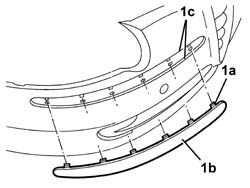

7055B32 protective moulding on front bumper (1), lh or rh - r r
- Path
- Procedures > 70 FITTINGS > 7055 MOULDING AND PROTECTION > 7055B exterior protections > 7055B32 protective moulding on front bumper (1), lh or rh - r r
- Kind
- repair procedure (removal / refitting; the operation number is the code)
- Applies to
- all engines; all production periods
- Interactive page
- https://sloeber94.github.io/elrnDB-a147/en/#/3025909
Applies to: all engines; all production periods
 Removing
Removing
 Refitting
Refitting1. Release the retainers (1a) and remove the moulding (1b).

Applies to: all engines; all production periods
Refitting
RemovingCheck that the moulding is undamaged.
Position the moulding and do up the retainers.
Remove the adhesive tape.
Applies to: all engines; all production periods; only with equipment: Lavafari
Removing
Refitting7055B54 under-engine guard - r r
7055B64 Engine compartment DUST shield in front wheel arch (one), left or right - R.R. (left and right sides)
7055B42 Additional FRONT WHEEL ARCH (one), left or right - R.R. (left and right sides)
Applies to: all engines; all production periods; only with equipment: Lavafari
Refitting
Removing5050D10 headlamp washer jet/s - r+r with bumpers removed
7055B42 Additional FRONT WHEEL ARCH (one), left or right - R.R. (left and right sides)
7055B64 Engine compartment DUST shield in front wheel arch (one), left or right - R.R. (left and right sides)
Topics linked from this page (5)
- 5050D10 headlamp washer jet/s - r+r with bumpers removed
- 7055B42 Additional FRONT WHEEL ARCH (one), left or right - R.R.
- 7055B54 under-engine guard - r r
- 7055B64 Engine compartment DUST shield in front wheel arch (one), left or right - R.R.
- 7210E10 R.R. CENTRE PILLAR